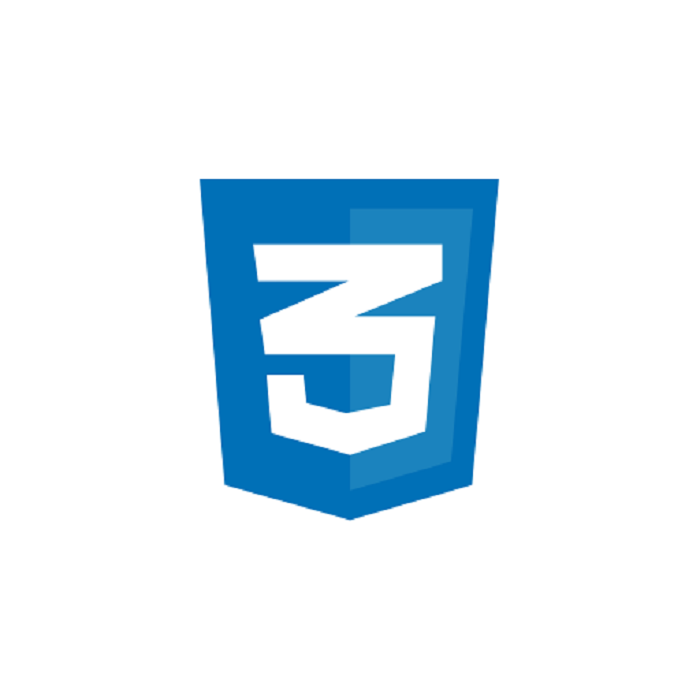
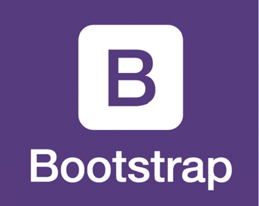

Courses to get started with Web Development!
HTML
Hypertext Markup Language is the standard markup language for documents designed to be displayed in a web browser.
It can be assisted by technologies such as Cascading Style Sheets and scripting languages such as JavaScript and VBScript.
Click on the HTML logo to get started with learning journey.

CSS
Cascading Style Sheets is a style sheet language used for describing the presentation of a document written in a markup language like HTML.
CSS is a cornerstone technology of the World Wide Web, alongside HTML and JavaScript.
Click on the CSS logo to get started with learning journey.

JavaScript
JavaScript, often abbreviated as JS, is a programming language that conforms to the ECMAScript specification. JavaScript is high-level, often just-in-time compiled, and multi-paradigm.
It has curly-bracket syntax, dynamic typing, prototype-based object-orientation, and first-class functions.
Click on the Javascript logo to get started with learning journey.

Bootstrap
Bootstrap is a free and open-source CSS framework directed at responsive, mobile-first front-end web development.
It contains CSS- and JavaScript-based design templates for typography, forms, buttons, navigation, and other interface components.
Click on the Bootstrap logo to get started with learning journey.

Foundation
Foundation is a responsive front-end framework. Foundation provides a responsive grid and HTML and CSS UI components, templates, and code snippets, including typography, forms, buttons,
navigation and other interface elements, as well as optional functionality provided by JavaScript extensions.
Click on the Foundation logo to get started with learning journey.
Bulma
Bulma is a free, open source CSS framework based on Flexbox and built with Sass. It's 100% responsive, fully modular, and available for free.
Click on the Bulma logo to get started with learning journey.

Pure
Search Results
Featured snippet from the web
Pure. CSS is a framework of CSS. It is a collection of small sets of responsive CSS modules which can be used in any web application.
It is used to create faster, beautiful and responsive websites. It can be used as an alternative of Bootstrap.
Click on the Pure logo to get started with learning journey.